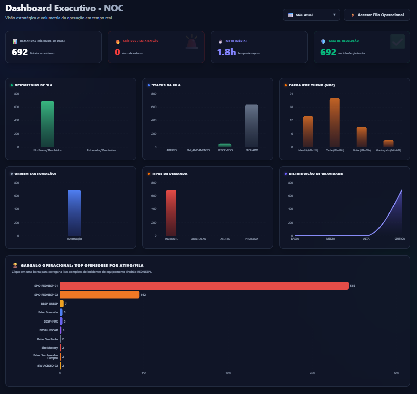
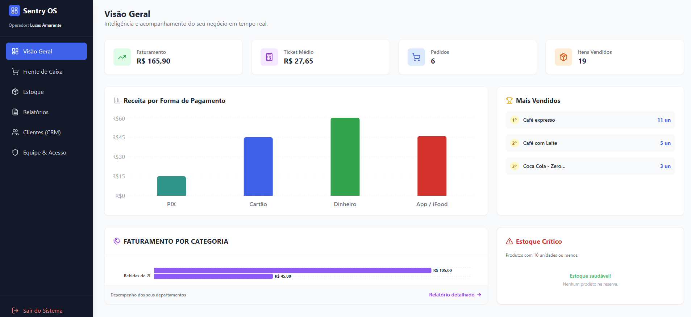

01
Operação, não apenas workflow
Produtos desenhados para o trabalho contínuo de equipes que operam tecnologia ou negócios no dia a dia.
A Tech Sentry desenvolve software operacional para Technology Operations e Business Operations. Duas plataformas independentes, uma filosofia: observar, entender, decidir, executar dentro de governança e verificar o resultado.
ITSM e OS são produtos independentes, contratados e operados separadamente.
Operating model
Observe
Understand
Detect
Decide
Approve
Act
Verify
Learn
Contexto
Dados operacionais conectados à decisão.
Governança
Políticas, aprovações e auditoria.
Resultado
Ação seguida de verificação e aprendizado.
A tese Tech Sentry
Sistemas operacionais precisam ajudar equipes a interpretar sinais, organizar contexto, tomar decisões e controlar a execução. É esse espaço entre registro e ação que a Tech Sentry chama de Operational Intelligence.
Produtos desenhados para o trabalho contínuo de equipes que operam tecnologia ou negócios no dia a dia.
Dados, eventos, ativos, clientes e histórico ganham valor quando ajudam a interpretar o que está acontecendo.
Permissões, políticas, feature flags, auditoria e aprovações fazem parte do modelo operacional.
A visão de longo prazo fecha o ciclo: executar, verificar o efeito e aprender com o resultado.
IT & Network Operations com governança operacional.
Para equipes de TI, telecom, ISPs, NOCs, SRE e operações críticas que precisam combinar gestão de incidentes, ativos, topologia, mudanças, observabilidade e automação em uma operação governada.

Domínio
ITSM
Observabilidade
Zabbix
Edge
Agent/Satellite

Operação
PDV
Gestão
CRM / ERP
Integração
iFood
Operação comercial em uma plataforma própria.
Para comércio, varejo e prestadores de serviço que precisam conectar frente de caixa, estoque, clientes, vendas e operação diária sem depender de múltiplos controles isolados.
Sentry-Master
O Master administra o ecossistema Tech Sentry. Ele governa clientes, assinaturas, planos, provisionamento, billing, saúde básica, auditoria administrativa e features.
Não é ITSM. Não é ERP. Não transporta chamados do ITSM para o OS nem vendas do OS para o ITSM.
SENTRY-MASTER
Gestão / Governança
Sentry-ITSM
Assinatura independente
Sentry-OS
Assinatura independente
Não existe pacote ou licença “BOTH”.
Soluções por operação
Páginas específicas para os cenários onde Sentry-ITSM e Sentry-OS geram valor hoje.
Segurança e governança
A arquitetura Tech Sentry parte de princípios comuns de isolamento, menor privilégio, auditoria e reversibilidade. O objetivo não é automatizar a qualquer custo — é aumentar capacidade operacional com guardrails explícitos.
Separação de dados e contexto por tenant.
Acesso limitado ao necessário para cada papel.
Ações sensíveis devem deixar trilha verificável.
Automação pode ser controlada ou interrompida.
Ações destrutivas exigem regras e autorização.
Produção deve permitir validação e rollback quando aplicável.
Os itens abaixo representam a arquitetura-alvo e capacidades planejadas. Não são apresentados como funcionalidades já entregues.
Sentry-ITSM — visão
Sentry-OS — visão
Regra de comunicação Tech Sentry
Capacidade atual = disponível hoje. Arquitetura-alvo / planejado = roadmap.
Próximo passo
Conte o cenário. A Tech Sentry identifica se o melhor ponto de entrada é Technology Operations ou Business Operations — sem misturar os produtos.
Contato comercial